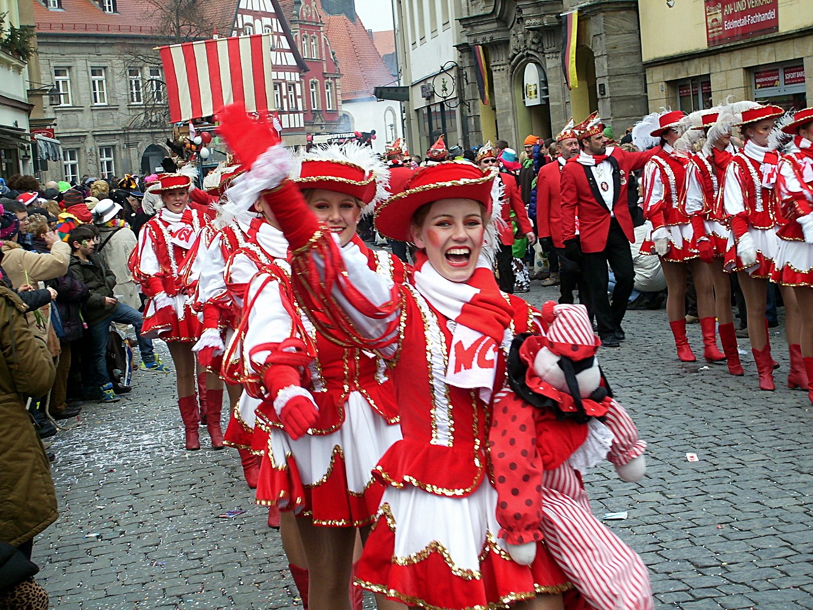

Cologne’s big aces up its sleeve
click the card you like

Dialect

The Cologne dialect has old Franconian influences, and is often quite close to Dutch (in phonetic and lexical respects).
Carnival
Every year on 11.11. at 11:11 am the carnival season starts. It lasts until Ash Wednesday. The highlight is Rose Monday with the big parade through the city.
Kölsch

In Cologne, beer drinkers drink Kölsch. In the Cologne brewery, the waiter is called "Köbes" (a short form of the Rhenish first name Jakob).
Museums

For Cologne residents, admission to the city's museums is free on the first Thursday of every month, except on public holidays.
More Culture

Cologne has a lot more
culture to offer:
perfume,
soccer, media, for example.
Continue

Continue